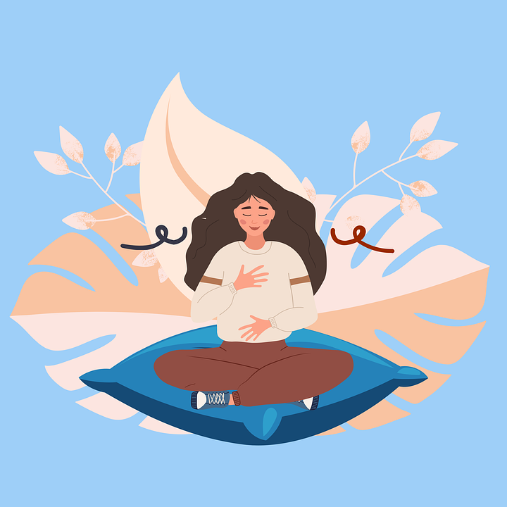

Tips Kesehatan Mental
Tips Kesehatan Mental
Berikut adalah beberapa tips yang dapat membantu Anda menjaga kesehatan mental, seperti meditasi, olahraga, dan tidur yang cukup...
- Relaksasi untuk Mengurangi Stres: Cobalah teknik pernapasan dalam dan relaksasi otot progresif.
- Manajemen Insomnia: Hindari perangkat elektronik sebelum tidur dan cobalah meditasi untuk tidur yang lebih nyenyak.
- Tips Menghadapi Kecemasan: Berbicara dengan seseorang yang Anda percayai bisa sangat membantu.